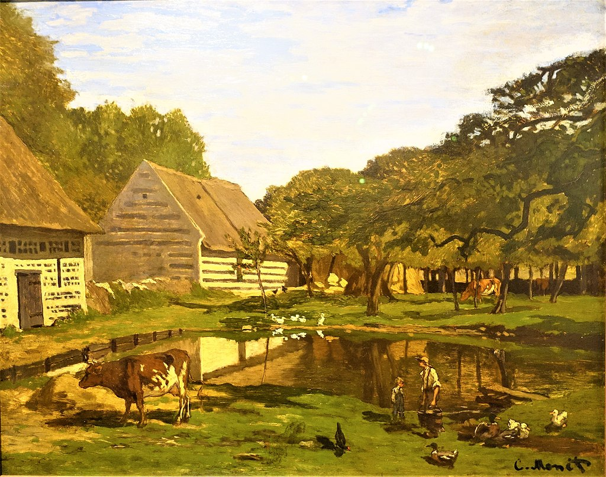

<head>
<meta charset="UTF-8" />
<meta name="keywords" content="drawing, painting" />
<meta name="description" content="drawings by Sunjy" />
<title>Sunjy</title>
<link rel="shortcut icon" type="image/x-icon" href="../../mImages/mCommon/favicon.ico" media="screen" />
<link rel="stylesheet" type="text/css" href="../../mCsses/mCommon/mCssA.css" />
<link rel="stylesheet" type="text/css" href="../../mCsses/mCommon/mCssB.css" />
<link rel="stylesheet" type="text/css" href="../../mCsses/mCommon/mCssC.css" />
<link rel="stylesheet" type="text/css" href="../../mCsses/mCommon/mCssD.css" />
<link rel="stylesheet" type="text/css" href="../../mCsses/mContent/mCssA.css" />
<link rel="stylesheet" type="text/css" href="../../mCsses/mContent/mCssB.css" />
<link rel="stylesheet" type="text/css" href="../../mCsses/mContent/mCssC.css" />
<link rel="stylesheet" type="text/css" href="../../mCsses/mContent/mCssD.css" />
</head>
<script type="text/javascript" src="../../mScripts/mContent/mContentAA.js" /></script>
<script type="text/javascript" src="../../mScripts/mContent/mContentAB.js" /></script>
<script type="text/javascript" src="../../mScripts/mContent/mContentAC.js" /></script>
<script type="text/javascript" src="../../mScripts/mContent/mContentAD.js" /></script>
<script type="text/javascript"></script> 
<script type="text/javascript">
document.write('<div class="mImgAbsolute"></div>');
/*
document.write('<p class="mFontSizeBColor" />From a white paper...</p>');
document.write('<table class="center"><tr><td>');
document.write('');
document.write('</td></tr></table>');
*/
</script>


<script type="text/javascript">
document.write('<p class="mFontSizeBColor" />Farmyard in Normandy</p>');
document.write('<p class="mFontSizeSColor" />“Farmyard in Normandy” by Claude Monet is one of his very early paintings. Monet produced a surprisingly small number of pictures during his early years as an artist.<br><br>By studying the masters of earlier generations, Monet learned to start with a quick sketch and then complete the painting with paint patches and dabs to create a complete piece that captured the scene.<br><br>This painting was made when he was twenty-three at the start of his career.<br><br>Claude Monet was born in 1840 in Paris, and at the age of five, his family moved to Normandy on the northern French coast.<br><br>His parents called him Oscar and his father wanted him to go into the family’s retail business, but Monet wanted to become an artist.<br><br>At age eleven, Monet entered Le Havre secondary school of the arts. Locals got to know him for his charcoal caricatures, which he would sell for ten to twenty francs.<br><br>On the beaches of Normandy at age sixteen, he met an artist Eugène Boudin, who became his mentor and taught him to use oil paints. Boudin taught Monet “en Plein air” the outdoor techniques for painting.<br><br>At the age of sixteen, his mother, who supported his artistic ambitions, died, and he left school and went to live with his aunt.<br><br>In Paris, for several years, he met other young painters, including Édouard Manet and others who would become friends.<br><br>At the age of twenty-one, Monet was drafted into the African Light Cavalry in Algeria for seven years of military service.<br><br>His father could have purchased Monet’s exemption from conscription but declined to do so when his son refused to give up painting.<br><br>While in Algeria, Monet did only a few sketches, all of which have been lost. After about a year of garrison duty in Algiers, Monet contracted typhoid fever and briefly went absent without leave.<br><br>Monet’s aunt intervened to remove him from the army if he agreed to complete a course at an art school.<br><br>He left the army and started art school, but became disillusioned with the traditional art schools.<br><br>In 1862, a year before this painting, Monet became a student of Charles Gleyre in Paris, where he met Pierre-Auguste Renoir, Frédéric Bazille, and Alfred Sisley.<br><br>Together they shared new approaches to art, painting the effects of light in the outdoor air with broken color and rapid brushstrokes. This painting was painted at this time in 1863.<br></p>');
document.write('<table class="center" /><tr><td>');
document.write('<br>By studying the masters of earlier generations, Monet learned to start with a quick sketch and then complete the painting with paint patches and dabs to create a complete piece that captured the scene.<br><br>This painting was made when he was twenty-three at the start of his career.<br><br>Claude Monet was born in 1840 in Paris, and at the age of five, his family moved to Normandy on the northern French coast.<br><br>His parents called him Oscar and his father wanted him to go into the family’s retail business, but Monet wanted to become an artist.<br><br>At age eleven, Monet entered Le Havre secondary school of the arts. Locals got to know him for his charcoal caricatures, which he would sell for ten to twenty francs.<br><br>On the beaches of Normandy at age sixteen, he met an artist Eugène Boudin, who became his mentor and taught him to use oil paints. Boudin taught Monet “en Plein air” the outdoor techniques for painting.<br><br>At the age of sixteen, his mother, who supported his artistic ambitions, died, and he left school and went to live with his aunt.<br><br>In Paris, for several years, he met other young painters, including Édouard Manet and others who would become friends.<br><br>At the age of twenty-one, Monet was drafted into the African Light Cavalry in Algeria for seven years of military service.<br><br>His father could have purchased Monet’s exemption from conscription but declined to do so when his son refused to give up painting.<br><br>While in Algeria, Monet did only a few sketches, all of which have been lost. After about a year of garrison duty in Algiers, Monet contracted typhoid fever and briefly went absent without leave.<br><br>Monet’s aunt intervened to remove him from the army if he agreed to complete a course at an art school.<br><br>He left the army and started art school, but became disillusioned with the traditional art schools.<br><br>In 1862, a year before this painting, Monet became a student of Charles Gleyre in Paris, where he met Pierre-Auguste Renoir, Frédéric Bazille, and Alfred Sisley.<br><br>Together they shared new approaches to art, painting the effects of light in the outdoor air with broken color and rapid brushstrokes. This painting was painted at this time in 1863.<br>" />');
document.write('</td></tr></table>');
</script>


